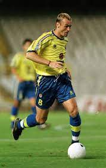

El sueño se cumplio en Logro, Ferran ficho por el villareal y empezo su gran carrera profesional
Poco a poco empezo siendo titular, empezo cojiendo forma, sufrio durante años por lesiones, pero logro ser uno de los mejores jugadores a sus 21 años de edad.
Despues de varios años, acabo ganando la deseosa Europa Legue a lo que le llego ser el mejor jugador de la europa.